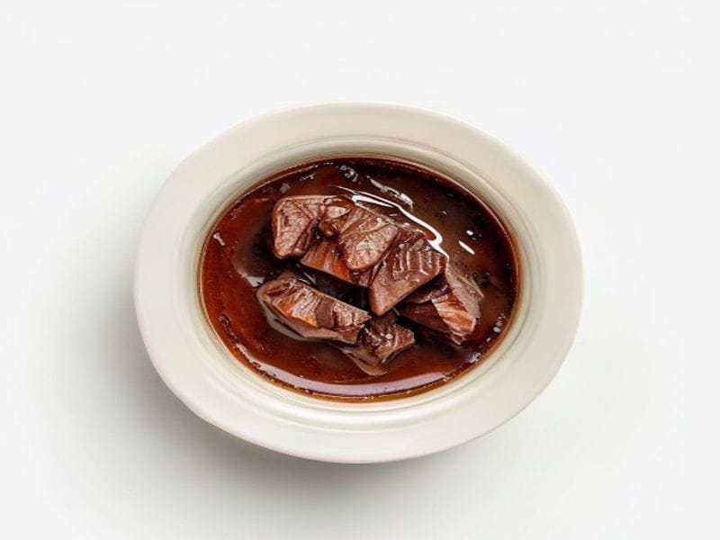

Mięsa i ryby
Tuńczyk w sosie własnym
Tuńczyk w sosie własnym: 22 g białka, 128 kcal, 3 g węglowodanów i 3 g tłuszczu na 100 g. Kategoria: Mięsa i ryby.
Kalorie128 kcalna 100 g
Białko / proteiny22 g
Węglowodany3 g
Tłuszcz3 g
Cena (szac.)~4,58 złza 100 g
Ceny zaktualizowano: maj 2026 (szacunek — ceny w popularnych supermarketach)
Porcja: puszka (120g)
| Kalorie | 154 kcal |
|---|---|
| Białko | 26.4 g |
| Węglowodany | 3.6 g |
| Tłuszcz | 3.6 g |
| Cena (szac.) | ~5,49 zł |
Szczegółowe składniki odżywcze na 100 g
| Wartość energetyczna (kalorie) | 128 kcal |
|---|---|
| Białko (proteiny) | 22 g |
| Węglowodany | 3 g |
| Tłuszcz | 3 g |
| Tłuszcze nasycone | 0.8 g |
| Tłuszcze nienasycone | 2.2 g |
| Witaminy i minerały | Żelazo, Cynk, Witamina B12 |
| Współczynnik kcal / 1 g białka | 5.8 |
| Cena produktu (szac. za 100 g) | ~4,58 zł |
| Cena za 100 g białka (szac.) | ~20,80 zł |